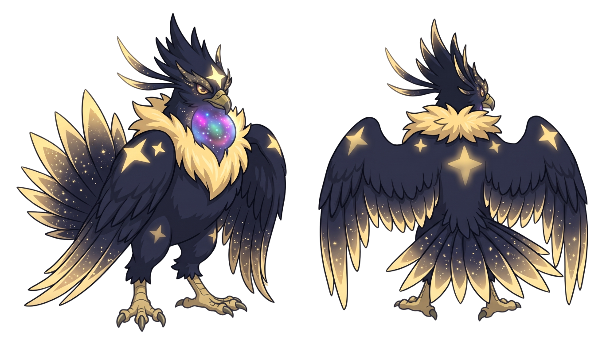

ASTRORAPTORITE X · MEGA EVOLUTION X
Mega Astroraptor X
NEBULA NOVA POKÉMON

| STAT | BASE | MEGA | Δ |
|---|---|---|---|
| HP | 88 | 88 | — |
| Attack | 80 | 85 | +5 |
| Defense | 78 | 98 | +20 |
| Sp. Atk | 124 | 164 | +40 |
| Sp. Def | 85 | 105 | +20 |
| Speed | 85 | 100 | +15 |
| Total | 540 | 640 | +100 |
About
Mega Evolution X twists Astroraptor’s cosmic energy into a volatile, paradoxical blend of radiant light and absolute shadow. Its dark plumage adopts an obsidian sheen, and the forehead crest erupts into a sharp, four-pointed star. The primary change is the absolute detonation of its internal energy, causing the throat nebula to expand and engulf its entire chest and ruff in a shimmering, unstable galaxy cloud. It bends both stellar light and pitch-black gravity to its will.
Mega Lore
The X resonance reacts violently with the nebula core, pulling cosmic shadows into its radiant light. In ancient times, this dual nature was viewed with deep awe and fear; its unstable throat sac was believed to contain a dormant supernova capable of plunging regions into artificial night or blinding them with starlight. Cults worshipped it as the ultimate arbiter of eclipse and dawn.
Pokédex Entry
“The power of Mega Evolution X forces the internal nebula to the surface. While incredibly destructive, its expanded cosmic core is highly volatile; it must constantly vent superheated stardust from its wings to prevent self-destruction. It manipulates shadows to trap prey before incinerating them with beams of condensed light.”
Boosts Light- and Dark-type moves while active.
ASTRORAPTORITE X · FORM STUDY
Additional artwork
